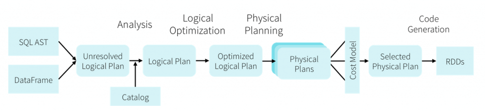
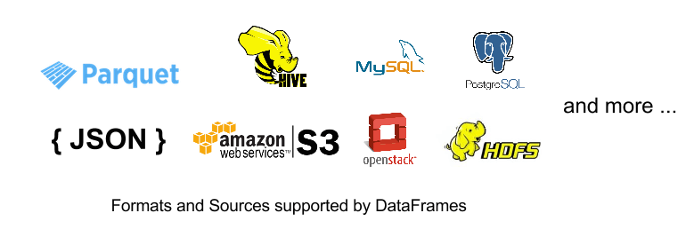
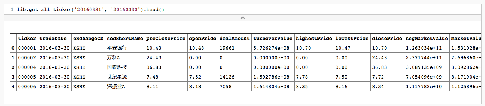
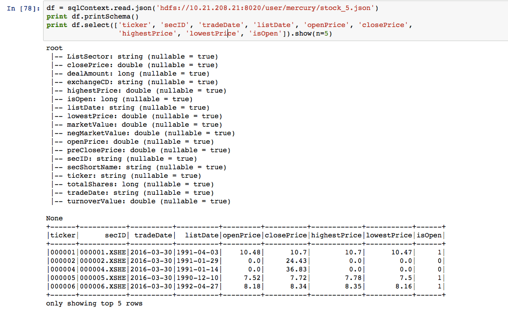
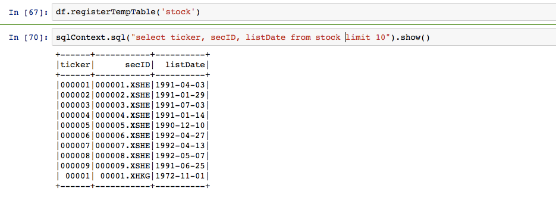
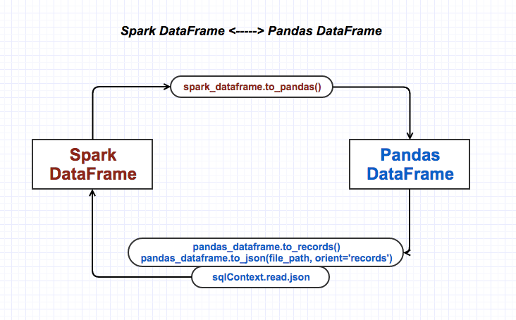
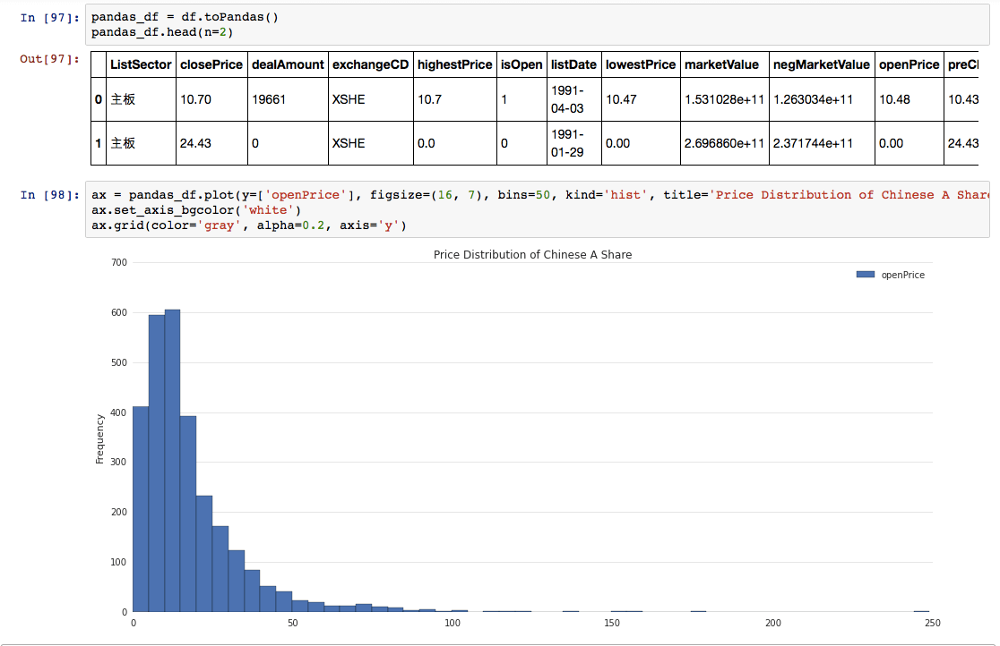

『 Spark 』7. 使用 Spark DataFrame 进行大数据分析
2016-03-30
写在前面
本系列是综合了自己在学习spark过程中的理解记录 ＋ 对参考文章中的一些理解 ＋ 个人实践spark过程中的一些心得而来。写这样一个系列仅仅是为了梳理个人学习spark的笔记记录，所以一切以能够理解为主，没有必要的细节就不会记录了，而且文中有时候会出现英文原版文档，只要不影响理解，都不翻译了。若想深入了解，最好阅读参考文章和官方文档。
其次，本系列是基于目前最新的 spark 1.6.0 系列开始的，spark 目前的更新速度很快，记录一下版本号还是必要的。
最后，如果各位觉得内容有误，欢迎留言备注，所有留言 24 小时内必定回复，非常感谢。
Tips: 如果插图看起来不明显，可以：1. 放大网页；2. 新标签中打开图片，查看原图哦；3. 点击右边目录上方的 present mode 哦。
1. 什么是 spark dataframe
先来看看官方原汁原味的文档是怎么介绍的：
A DataFrame is a distributed collection of data organized into named columns. It is conceptually equivalent to a table in a relational database or a data frame in R/Python, but with richer optimizations under the hood. DataFrames can be constructed from a wide array of sources such as: structured data files, tables in Hive, external databases, or existing RDDs.
我们可以看到 spark dataframe 的几个关键点：
- 分布式的数据集
- 类似关系型数据库中的table，或者 excel 里的一张 sheet，或者 python/R 里的 dataframe
- 拥有丰富的操作函数，类似于 rdd 中的算子
- 一个 dataframe 可以被注册成一张数据表，然后用 sql 语言在上面操作
- 丰富的创建方式
- 已有的RDD
- 结构化数据文件
- JSON数据集
- Hive表
- 外部数据库
2. 为什么要用 spark dataframe
为什么要用 dataframe，从细节实现上来说，这个问题比较复杂，不过，基本上下面这张图就能说明所有问题了：

但是，本文是从基础角度来说 spark dataframe，先不纠结这些细节问题，先了解一些基础的原理和优势，关于上面那张图里面的内容，看后期安排，也许在之后第 15 篇左右会专门讲。
DataFrame API 是在 R 和 Python data frame 的设计灵感之上设计的，具有以下功能特性：
- 从KB到PB级的数据量支持；
- 多种数据格式和多种存储系统支持；
- 通过Spark SQL 的 Catalyst优化器进行先进的优化，生成代码；
- 通过Spark无缝集成所有大数据工具与基础设施；
- 为Python、Java、Scala和R语言（SparkR）API；
简单来说，dataframe 能够更方便的操作数据集，而且因为其底层是通过 spark sql 的 Catalyst优化器生成优化后的执行代码，所以其执行速度会更快。总结下来就是，使用 spark dataframe 来构建 spark app，能：
- write less : 写更少的代码
- do more : 做更多的事情
- faster : 以更快的速度
3. 创建 dataframe
因为 spark sql，dataframe，datasets 都是共用 spark sql 这个库的，三者共享同样的代码优化，生成以及执行流程，所以 sql，dataframe，datasets 的入口都是 sqlContext。可用于创建 spark dataframe 的数据源有很多，我们就讲最简单的从结构化文件创建 dataframe。

- step 1 : 创建 sqlContext
下面是我自己创建 spark sc 都模版：
sc_conf = SparkConf()
sc_conf.setAppName("03-DataFrame-01")
sc_conf.setMaster(SPARK_MASTER)
sc_conf.set('spark.executor.memory', '2g')
sc_conf.set('spark.logConf', True)
sc_conf.getAll()
try:
sc.stop()
time.sleep(1)
except:
sc = SparkContext(conf=sc_conf)
sqlContext = SQLContext(sc)- step 2 : 创建 dataframe，从 json 文件
数据文件说明：中国 A 股上市公司基本信息，可以在这里取到：stock_5.json

注：这里的 json 文件并不是标准的 json 文件，spark 目前也不支持读取标准的 json 文件。你需要预先把标准的 json 文件处理成 spark 支持的格式: 每一行是一个 json 对象。
比如说，官网的 people.json 这个例子，它要求的格式是：
{"name":"Yin", "address":{"city":"Columbus","state":"Ohio"}}
{"name":"Michael", "address":{"city":null, "state":"California"}}但对这个文件来看，标准的 json 格式只有下面两种：
{"name": ["Yin", "Michael"],
"address":[
{"city":"Columbus","state":"Ohio"},
{"city":null, "state":"California"}
]
}
### 或者
[
{"name":"Yin", "address":{"city":"Columbus","state":"Ohio"}},
{"name":"Michael", "address":{"city":null, "state":"California"}}
]所以在用 spark sql 来读取一个 json 文件的时候，务必要提前处理好 json 的文件格式，这里我们已经提前处理好了，文件如下所示：
{"ticker":"000001","tradeDate":"2016-03-30","exchangeCD":"XSHE","secShortName":"\u5e73\u5b89\u94f6\u884c","preClosePrice":10.43,"openPrice":10.48,"dealAmount":19661,"turnoverValue":572627417.1299999952,"highestPrice":10.7,"lowestPrice":10.47,"closePrice":10.7,"negMarketValue":126303384220.0,"marketValue":153102835340.0,"isOpen":1,"secID":"000001.XSHE","listDate":"1991-04-03","ListSector":"\u4e3b\u677f","totalShares":14308676200},
{"ticker":"000002","tradeDate":"2016-03-30","exchangeCD":"XSHE","secShortName":"\u4e07\u79d1A","preClosePrice":24.43,"openPrice":0.0,"dealAmount":0,"turnoverValue":0.0,"highestPrice":0.0,"lowestPrice":0.0,"closePrice":24.43,"negMarketValue":237174448154.0,"marketValue":269685994760.0,"isOpen":0,"secID":"000002.XSHE","listDate":"1991-01-29","ListSector":"\u4e3b\u677f","totalShares":11039132000}### df is short for dataframe
df = sqlContext.read.json('hdfs://10.21.208.21:8020/user/mercury/stock_5.json')
print df.printSchema()
print df.select(['ticker', 'secID', 'tradeDate', 'listDate', 'openPrice', 'closePrice',
'highestPrice', 'lowestPrice', 'isOpen']).show(n=5)
4. 操作 dataframe
同 rdd 一样，dataframe 也有很多专属于自己的算子，用于操作整个 dataframe 数据集，我们以后都简称为 dataframe api 吧，用 算子， DSL 这类的称呼对不熟悉的人来说不易理解，下面这里是完整的 api 列表：spark dataframe api
4.1 在 dataframe 上执行 sql 语句

4.2 spark dataframe 与 pandas dataframe 转换
一图胜千言啊：

纵观 spark 的诞生和发展，我觉得 spark 有一点做得非常明智：对同类产品的兼容。从大的方面来说，就像 spark 官网的这段话一样: Runs Everywhere: Spark runs on Hadoop, Mesos, standalone, or in the cloud. It can access diverse data sources including HDFS, Cassandra, HBase, and S3.，spark 对 hadoop 系产品的兼容，让 hadoop 系的开发人员可以轻松的从 hadoop 转到 spark；从小的方面来说，spark 对一些细分工具也照顾 [兼容] 得很好，比如说 spark 推出了 dataframe，人家就可以支持 spark dataframe 和 pandas dataframe 的转换。
熟悉 pandas dataframe 的都了解，pandas 里的 dataframe 可以做很多事情，比如说画图，保存为各种类型的文件，做数据分析什么的。我觉得，可以在 spark 的 dataframe 里做数据处理，分析的整个逻辑，然后可以把最后的结果转化成 pandas 的 dataframe 来展示。当然，如果你的数据量小，也可以直接用 pandas dataframe 来做。

5. 一些经验
5.1 spark json 格式问题
spark 目前也不支持读取标准的 json 文件。你需要预先把标准的 json 文件处理成 spark 支持的格式: 每一行是一个 json 对象。
5.2 spark dataframe 和 pandas dataframe 选择问题
如果数据量小，结构简单，可以直接用 pandas dataframe 来做分析；如果数据量大，结构复杂 [嵌套结构]，那么推荐用 spark dataframe 来做数据分析，然后把结果转成 pandas dataframe，用 pandas dataframe 来做展示和报告。
6. Next
ok，dataframe 简单的也说了几句了。我们先缓一缓，上个例子，再接着讲起他的，例子的话就用一个我正在实践的：用 spark 来做量化投资。
7. 打开微信，扫一扫，点一点，棒棒的，^_^

参考文章
- Spark SQL, DataFrames and Datasets Guide
- Introducing DataFrames in Spark for Large Scale Data Science
- From Webinar Apache Spark 1.5: What is the difference between a DataFrame and a RDD?
- 用Apache Spark进行大数据处理——第二部分：Spark SQL
- An introduction to JSON support in Spark SQL
- Spark新年福音：一个用于大规模数据科学的API——DataFrame
- An introduction to JSON support in Spark SQL
本系列文章链接
- 『 Spark 』1. spark 简介
- 『 Spark 』2. spark 基本概念解析
- 『 Spark 』3. spark 编程模式
- 『 Spark 』4. spark 之 RDD
- 『 Spark 』5. 这些年，你不能错过的 spark 学习资源
- 『 Spark 』6. 深入研究 spark 运行原理之 job, stage, task
- 『 Spark 』7. 使用 Spark DataFrame 进行大数据分析
- 『 Spark 』8. 实战案例 ｜ Spark 在金融领域的应用 ｜ 日内走势预测
- 『 Spark 』9. 搭建 IPython + Notebook + Spark 开发环境
- 『 Spark 』10. spark 应用程序性能优化｜12 个优化方法
- 『 Spark 』11. spark 机器学习
- 『 Spark 』12. Spark 2.0 特性介绍
- 『 Spark 』13. Spark 2.0 Release Notes 中文版
- 『 Spark 』14. 一次 Spark SQL 性能优化之旅